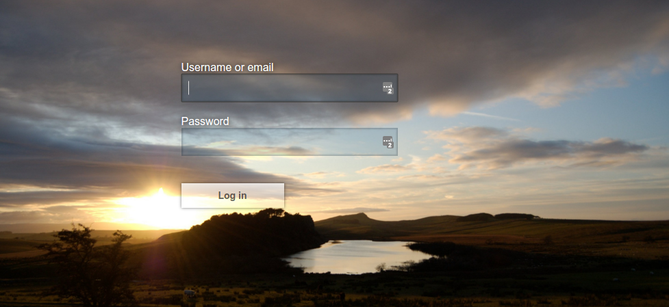

Cloak and Dagger Stories
Absichern von Anwendungen mit Keycloak
Wer bin ich?
Gregor Tudan
Greg0rT
State of IT-Security
Have I been pawned?

Warum sichere Anmeldung schwer ist:
Provider bauen Mist
- Roll your own crypto
- Kennwörter im Klartext
- seltsame Password-Policies
- veraltete Verfahren (keine 2FA)
- Sicherheitsl√ºcken (XSS, Injection…)
User bauen Mist
- zu leichtes Kennwort
- selbes Kennwort überall
- Social Engineering
- zu faul für 2FA
Lege nicht alle Eier in einen Korb
Lege all deine Eier in einen Korb - und dann gib recht acht auf den Korb
Worüber rede ich?
- kleine Einführung in OAuth
- das Keycloak-Projekt
- Absichern von Anwendungen
- "klassische" Webanwendungen
- SPA
- Mobile Apps
OAuth
"Wir machen OAuth!"
Meistens sind hier mehrere Dinge gemeint:
- OAuth 2.0
- OpenID Connect
- JSON Web-Tokens
OAuth 2.0
- Resource Owner
- hat eine "Resource" die geschützt werden soll
- hat Credentials
- Client
- App mit der ein RO auf die Resource zugreift
- Resource Server
- hier liegt die Resource des Owners (API)
- Auth-Server
- prüft die Credentials des Resource-Owners
- stellt einen Token für den Zugriff auf Resourcen aus
OpenID-Connect
erweitert die OAuth-Spec um:
- eine REST-API für OAuth
- die Möglichkeit Informationen zum User auszutauschen
- ein einheitliches Token-Format in JSON
Tokens

Warum Tokens?
entkoppeln Authentifizierung und Authorisierung- leicht weiterzureichen
- Echtheit kann überprüft werden
- begrenzte Lebenszeit
- können Zusatzinfos enthalten
JSON Web-Tokens (JWT)

OAuth Flow
[<actor> Browser] <-> [Client]
[Browser] <-> [Auth-Server]
[Client] -> [Resource Server]
[Client] -> [Auth-Server]
Keycloak
Keycloak ist
- ein Auth-Server für
- OpenID Connect
- SAML
- Open-Source
- nicht nur für Java
- von Redhat gesponsert
- der freie Ableger von Redhat Singe Sign-On
Integration mit Keycloak
[the cool stuff] --> [Keycloak]
[Keycloak] <- [<sender>SAML]
[Keycloak] <- [<database>LDAP]
[Keycloak] <- [<database>RDBMS]
[Keycloak] <- [<sender>OIDC]
mehr als Login
- Registrierung
- Password vergessen
- Account verwalten
- Terms of Service
- ...
Custom Themes
Admin UI

weitere Features
- Cluster-fähig
- User-Federation
- Social-Login
- Impersonation
- 2-Faktor Auth (TOTP)
- eigene Flows
- ...
Anwendungen
absichern
Adapter
Keycloak stellt fertige Adapter bereit für
- Java
- Wildfly, Jetty, Tomcat, Fuse
- Servlets, JAAS
- Spring Boot, Spring Security
- CLI, Desktop (z.B. Swing, JavaFX)
- Javascript/TS
- Standalone, NodeJS
- Generic Proxy (Keycloak Gatekeeper)
weitere Integationen
jede Menge OIDC-Libraries für verschiedene Sprachen
- C#
- Python
- Android
- iOS
- ...
- Apache, Nginx
Aufgaben der Adapter
- Token-Validierung
- Parsen des Tokens
- Setzen von Rollen/Berechtigungen
- Login/Logout (über Redirects)
- Token Refresh
Webanwendungen
Adapter installieren
- in Serververzeichnis entpacken oder
- Dependency hinzufügen
Webanwendungen
Client konfigurieren
über eigene Konfigurationsdatei (keycloak.json)
{
"realm" : "demo",
"clientId" : "hawtio-client",
"url" : "http://keycloak.example.com/auth",
"ssl-required" : "external",
"public-client" : true
}
Webanwendungen
Client konfigurieren
Webanwendungen
Berechtigungen konfigurieren
je nach Plattform
- Konfiguration (
application.yaml,web.xml) - Annotationen (
@RolesAllowed) - programmatisch
app.get('/complain', keycloak.protect(), complaintHandler);
Webanwendungen
Berechtigungen konfigurieren
<?xml version=""?>
<web-app>
<security-constraint>
<web-resource-collection>
<web-resource-name>Admins</web-resource-name>
<url-pattern>/admin/*</url-pattern>
</web-resource-collection>
<auth-constraint>
<role-name>admin</role-name>
</auth-constraint>
</security-constraint>
<login-config>
<auth-method>KEYCLOAK</auth-method>
<realm-name>Demo</realm-name>
</login-config>
<security-role>
<role-name>admin</role-name>
</security-role>
</web-app>
Single-Page-Apps
- über Javascript-Adapter
- darauf aufbauende Module
- OAuth-Code-Flow mit PKCE Extension
OAuth und Single-Page-Apps
RFC-Draft: OAuth 2.0 for Browser-Based Apps
Problem
- Browser und Client in Einem
- mögen Redirects nicht
- viel Validierung im Client
- sicheres Speichern von Tokens?
Keycloak Gatekeeper
[<actor> Browser] -> [<transceiver> Gatekeeper]
[<actor> Browser] -> [Keycloak]
[Gatekeeper] --> [Keycloak]
[Gatekeeper] -> [Application]
Mobile Apps
Mobile Apps
RFC-8252: OAuth 2.0 for Native Apps
Browser -> App)"/>Hybride Apps mit Cordova
In-App Browser
- Web-View in Web-View
- eigenes UI
- hat einige Quirks
- App sieht Interaktion
Native
- nutzt native Browser-Views
- Chrome Custom-Tabs
- SFSafariViewController
- App hat keinen Zugriff
- Redirect zur App notwendig
Cordova In-App Browser
Cordova Native
iOS Web-View-Race
- UIWebView (In-App Browser - don't do it)
- SFSafariViewController
- SFAuthenticationSession (iOS 11)
- Login für 3rd-Party-Apps mit OAuth
- Single-Sign-On für Apps
- ASWebAuthenticationSession (iOS 12)
- schützt User-Credentials
Android: In-App Browser oder Custom-Tabs ü§∑
native mobile Apps
(generische) 3rd-Party Libraries